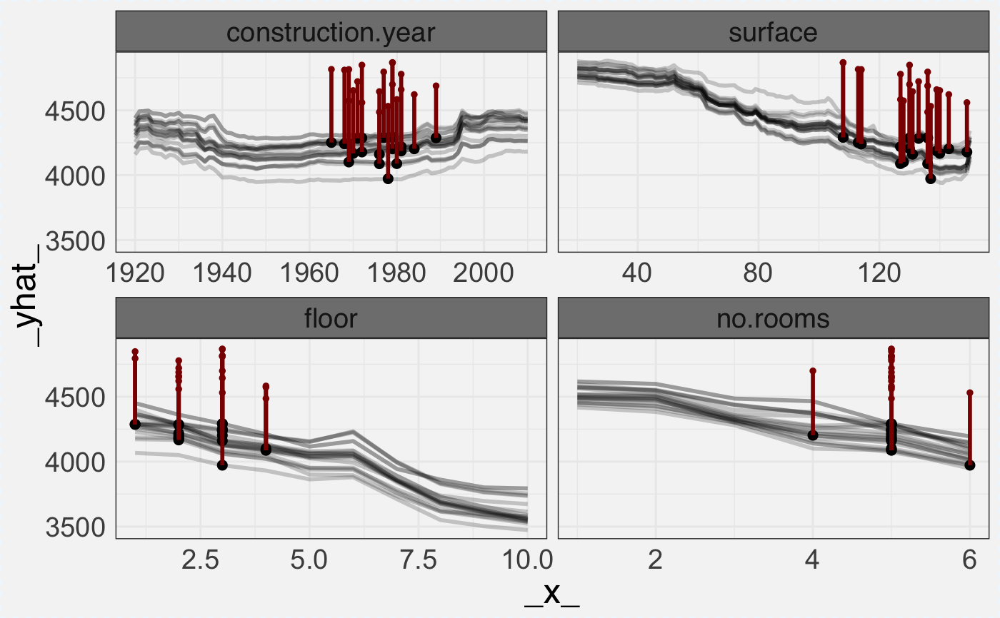
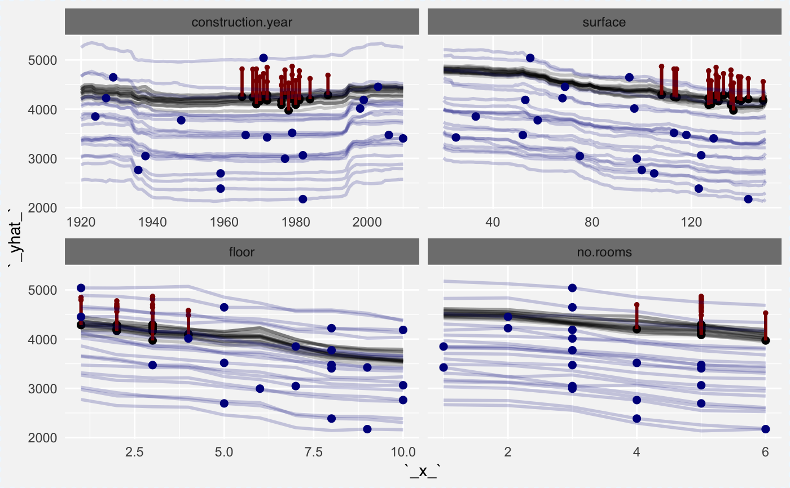
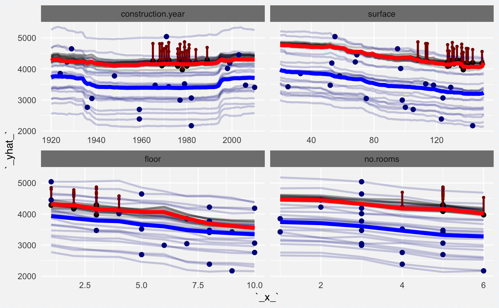

Add Layer to the Ceteris Paribus Plot
Function `ceteris_paribus_layer()` adds a layer to a plot created with `plot.ceteris_paribus_explainer()` plots. Various parameters help to decide what should be plotted, profiles, aggregated profiles, points or rugs.
ceteris_paribus_layer(x, ..., size = 1, alpha = 0.3, color = "black", size_points = 2, alpha_points = 1, color_points = color, size_rugs = 0.5, alpha_rugs = 1, color_rugs = color, size_residuals = 1, alpha_residuals = 1, color_residuals = color, only_numerical = TRUE, show_profiles = TRUE, show_observations = TRUE, show_rugs = FALSE, show_residuals = FALSE, aggregate_profiles = NULL, as.gg = FALSE, facet_ncol = NULL, selected_variables = NULL, init_plot = FALSE)
Arguments
| x | a ceteris paribus explainer produced with function `ceteris_paribus()` |
|---|---|
| ... | other explainers that shall be plotted together |
| size | a numeric. Size of lines to be plotted |
| alpha | a numeric between 0 and 1. Opacity of lines |
| color | a character. Either name of a color or name of a variable that should be used for coloring |
| size_points | a numeric. Size of points to be plotted |
| alpha_points | a numeric between 0 and 1. Opacity of points |
| color_points | a character. Either name of a color or name of a variable that should be used for coloring |
| size_rugs | a numeric. Size of rugs to be plotted |
| alpha_rugs | a numeric between 0 and 1. Opacity of rugs |
| color_rugs | a character. Either name of a color or name of a variable that should be used for coloring |
| size_residuals | a numeric. Size of line and points to be plotted for residuals |
| alpha_residuals | a numeric between 0 and 1. Opacity of points and lines for residuals |
| color_residuals | a character. Either name of a color or name of a variable that should be used for coloring for residuals |
| only_numerical | a logical. If TRUE then only numerical variables will be plotted. If FALSE then only categorical variables will be plotted. |
| show_profiles | a logical. If TRUE then profiles will be plotted. Either individual or aggregate (see `aggregate_profiles`) |
| show_observations | a logical. If TRUE then individual observations will be marked as points |
| show_rugs | a logical. If TRUE then individual observations will be marked as rugs |
| show_residuals | a logical. If TRUE then residuals will be plotted as a line ended with a point |
| aggregate_profiles | function. If NULL (default) then individual profiles will be plotted. If a function (e.g. mean or median) then profiles will be aggregated and only the aggregate profile will be plotted |
| as.gg | if TRUE then returning plot will have gg class |
| facet_ncol | number of columns for the `facet_wrap()`. |
| selected_variables | if not NULL then only `selected_variables` will be presented |
| init_plot | technical parameter, do not use. |
Value
a ggplot2 object
Examples
library("DALEX")library("randomForest") set.seed(59) apartments_rf_model <- randomForest(m2.price ~ construction.year + surface + floor + no.rooms + district, data = apartments) explainer_rf <- explain(apartments_rf_model, data = apartmentsTest[,2:6], y = apartmentsTest$m2.price) apartments_small_1 <- apartmentsTest[1,] apartments_small_2 <- select_sample(apartmentsTest, n = 20) apartments_small_3 <- select_neighbours(apartmentsTest, apartments_small_1, n = 20) cp_rf_y1 <- ceteris_paribus(explainer_rf, apartments_small_1, y = apartments_small_1$m2.price) cp_rf_y2 <- ceteris_paribus(explainer_rf, apartments_small_2, y = apartments_small_2$m2.price) cp_rf_y3 <- ceteris_paribus(explainer_rf, apartments_small_3, y = apartments_small_3$m2.price) tmp <- plot(cp_rf_y3, show_profiles = TRUE, show_observations = TRUE, show_residuals = TRUE, color = "black", alpha = 0.2, color_residuals = "darkred", selected_variables = c("construction.year", "surface")) tmp <- plot(cp_rf_y3, show_profiles = TRUE, show_observations = TRUE, show_residuals = TRUE, color = "black", alpha = 0.2, color_residuals = "darkred") tmptmp + ceteris_paribus_layer(cp_rf_y2, show_profiles = TRUE, show_observations = TRUE, alpha = 0.2, color = "darkblue")tmp + ceteris_paribus_layer(cp_rf_y2, show_profiles = TRUE, show_observations = TRUE, alpha = 0.2, color = "darkblue") + ceteris_paribus_layer(cp_rf_y2, show_profiles = TRUE, show_observations = FALSE, alpha = 1, size = 2, color = "blue", aggregate_profiles = mean) + ceteris_paribus_layer(cp_rf_y1, show_profiles = TRUE, show_observations = FALSE, alpha = 1, size = 2, color = "red", aggregate_profiles = mean)